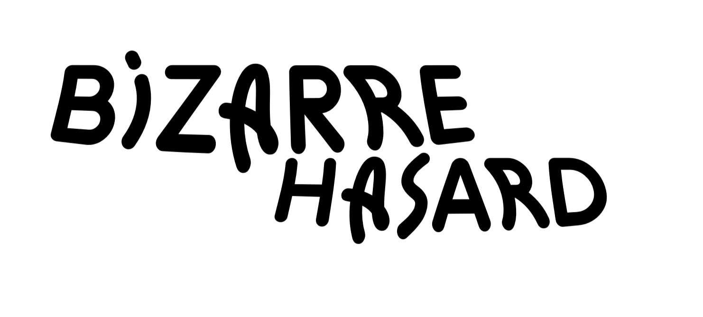
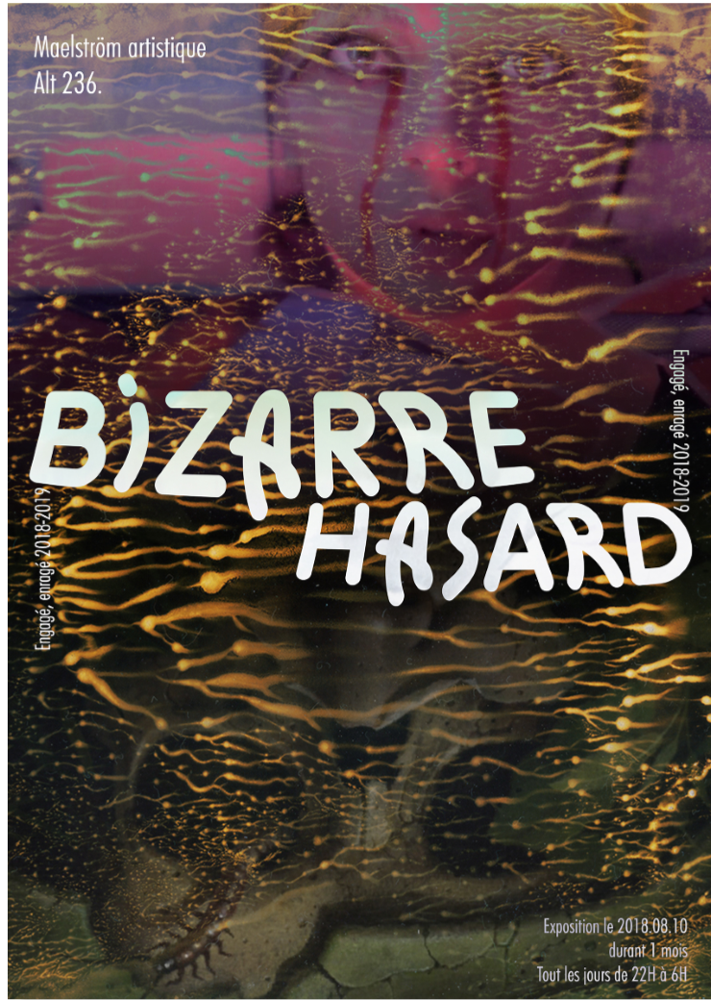
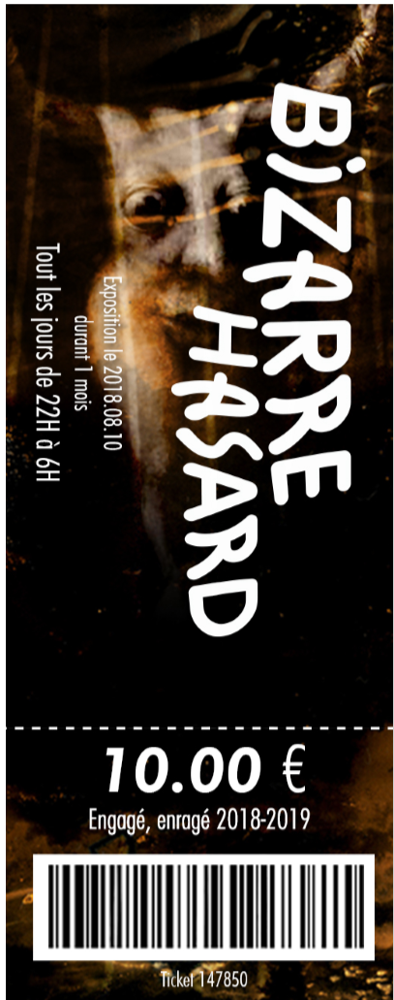
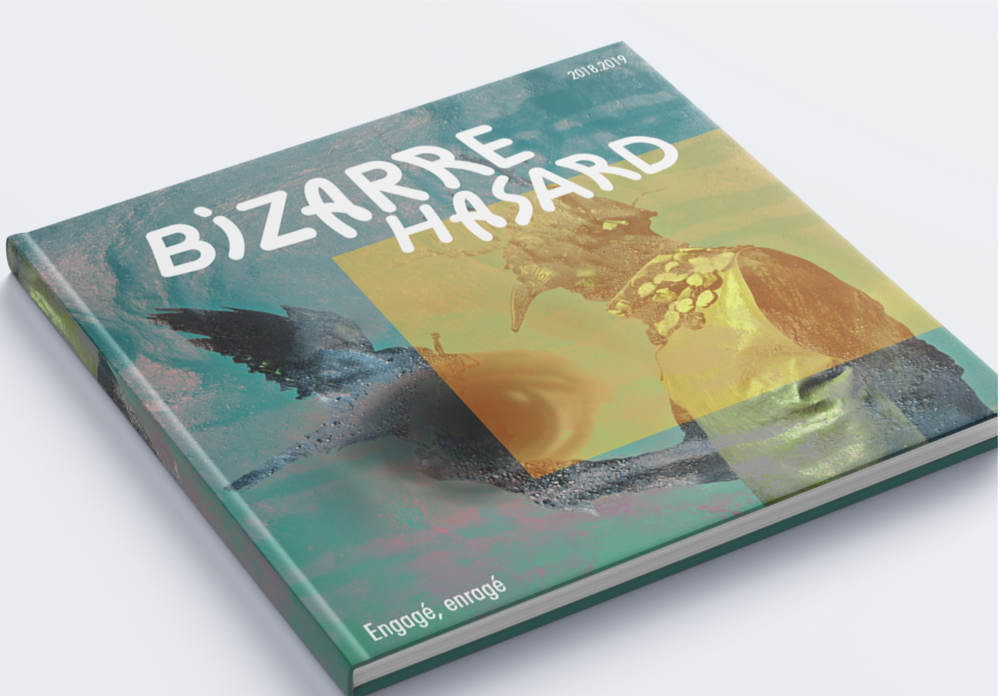
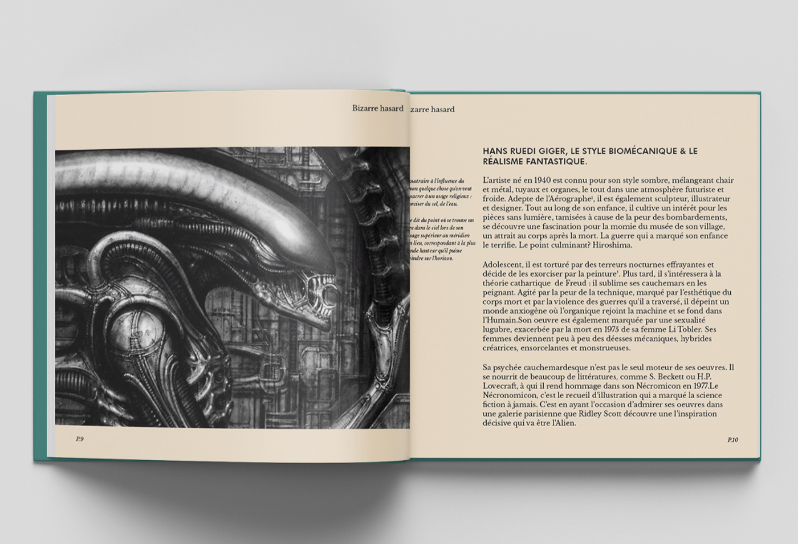

What is bizarre hazard? The basic concept is to work on an exhibition that is not usual, but I wanted to highlight in this exhibition artists who leave their work are horrific, strange or complicated.
Artists (Walkuski, Paul Rumsey, Giger) who influence me but who are not well known enough for me.I designed the logo, the typeface is inspired by one of benoît bodhuin who I had the chance to meet and work during a workshop. The typeface transmits the very strange side of this exhibition.

The poster plays with the mystical side to encourage people to come and see what is happening and play on the aesthetics already present in the universe of the artists I propose in the exhibition.
The purpose of the ticket is on the one hand to enter the exhibition but also to keep as a sovereign object from where a rather large format. For the end of the exhibition, I made a cultural book that could be bought at the end of the exhibition compiling all the artists present.




“"The big secret to breaking the rules is to make it look as though you're following them."”